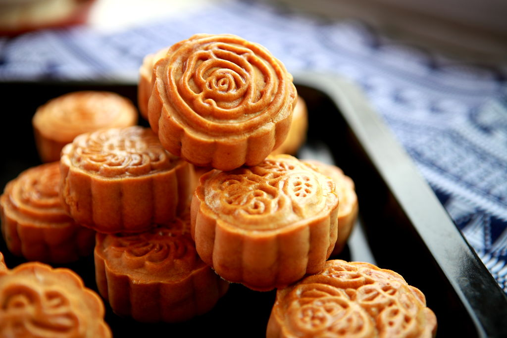
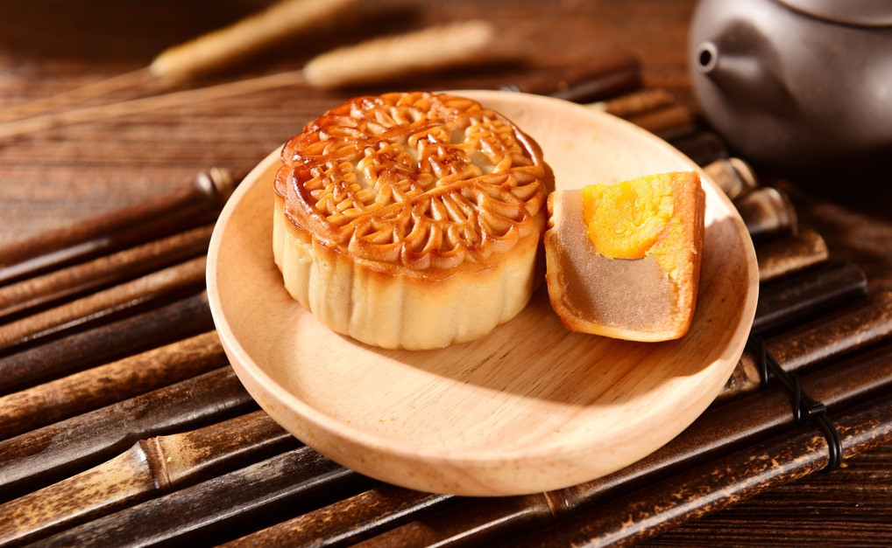
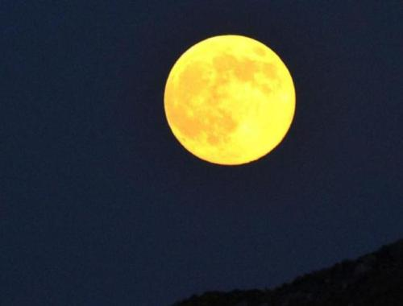

Mid-Autumn Festival
Mid-Autumn Festival is on the 15th day of the 8th month in a Chinese lunar year. In other words, it is about 8 months after the Lantern Festival. It usually falls in September or early October on the Gregorian calendar.
The most common traditional food on the Mid-Autumn Festival is Mooncake, which is a kind of round pastry. Mooncake could be either sweet or salty, depending on the fillings in it, and the cover could be made of different materials.
Typically, on Mid-Autumn Festival, people would appreciate the full moon with family members, and share mooncakes with them.
